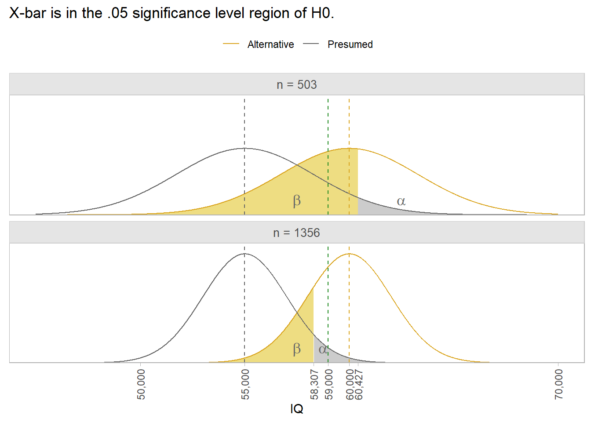

PracTools::nCont(CV0 = .05, CVpop = 2)[1] 1600The survey design (sampling strategy) depends on they question types, units of analysis from the target population and their available sampling frames, and the variables and covariates (Valliant 2013). Exploratory surveys often use non-probability sampling strategies like convenience and quota, but descriptive and explanatory surveys use probability sampling, including simple random sampling (SRS) and stratified sampling.1
Survey designs are fundamentally composed of combinations of four attributes: is the sample selected in a single stage or multiple stages; is there clustering in one or more stages; is there stratification in one or mores stages; are elements selected with equal probabilities? That’s 16 combinations, but in practice, most in-person surveys are multistage stratified cluster sampling with unequal probabilities.
Regardless of the survey design, sample size is set using one of two target values:
Simple Random Sampling (SRS) designs are almost never used because populations are heterogeneous and sub-populations may not return sufficient participation. Nevertheless, they are a good starting point for learning sampling concepts.
Suppose a survey variable estimates the population (universal) mean, \(\bar{Y}\), from the simple random sample mean, \(\bar{y}\). Under repeated sampling, the variance of the sample means is related to the population variance, \(S^2\), as a function of the sample size, \(n\).
\[ V(\bar{y}) = \left(1 - \frac{n}{N} \right) \frac{S^2}{n} \tag{3.1}\]
Equation 3.1 is the squared standard error multiplied by the finite population correction factor (FPC). The FPC reduces the expected variance for small populations. In practice, the FPC is only important when \(n/N < .05\).
The ratio of the estimate variance and the square of the estimate is the squared coefficient of variation.
\[ CV_0^2(\bar{Y}) = \left(1 - \frac{n}{N} \right) \cdot \frac{S^2}{n \cdot \bar{Y}^2} \tag{3.2}\]
Solve Equation 3.2 for the required sample size to achieve a targeted \(CV_0(\bar{Y})\).
\[ n = \frac{S^2 / \bar{Y}^2}{CV_0^2 + S^2 / (N \cdot \bar{Y}^2)} \tag{3.3}\]
The numerator in Equation 3.3 is the population CV (a.k.a., unit CV). Setting the unit CV is somewhat of a chicken-and-egg problem since \(S^2\) and \(\bar{Y}^2\) are the population parameters you are estimating in the first place. Either rely on prior research or a best guess. The range rule of thumb is \(S = \mathrm{range} / 4\). The targeted CV is usually set to 5% or 10%, or something better than prior research. Use PracTools::nCont() to calculate \(n\).
Example. Prior experience suggests the unit CV is approximately \(2\). Your survey targets \(CV_0(\bar{y}_s) = 0.05\).
N defaults to Inf, which is fine for large populations.
PracTools::nCont(CV0 = .05, CVpop = 2)[1] 1600Specify N for smaller populations like a company survey. A company of 10,000 employees requires a smaller sample.
PracTools::nCont(CV0 = .05, CVpop = 2, N = 10000)[1] 1379.31For a small population, say N = 1,000, sample about half.
PracTools::nCont(CV0 = .05, CVpop = 2, N = 1000)[1] 615.3846If you don’t know CVpop or ybarU and S2, but have an expectation about ybarU and the range, use the range rule of thumb.
PracTools::nCont(CV0 = .10, S2 = ((0 - 800) / 4)^2, ybarU = 100)[1] 400When does N become important? It depends on CV0, but N=20,000 seems to be upper limit.
Alternatively, you can target a margin of error.
\[ \begin{align} MOE &= t_{(1-\alpha/2), (n-1)} \cdot SE(\bar{y}) \\ &= t_{(1-\alpha/2), (n-1)} \cdot \sqrt{\left(1 - \frac{n}{N} \right) \frac{S^2}{n}} \end{align} \tag{3.4}\]
Solve Equation 3.4 for the required sample size to achieve the targeted \(MOE\).
\[ n = N \cdot \left(\frac{MOE^2 \cdot N}{t_{(1-\alpha/2), (n-1)}^2 S^2} + 1\right)^{-1} \tag{3.5}\]
Use PracTools::nContMoe() to calculate \(n\).
Example. Your survey targets a margin of error of 10. You use the range rule of thumb for \(S^2\).
PracTools::nContMoe(moe.sw = 1, e = 10, S2 = ((0 - 800) / 4)^2)[1] 1536.584For a finite population, specify N.
PracTools::nContMoe(moe.sw = 1, e = 10, S2 = ((0 - 800) / 4)^2, N = 1000)[1] 605.7689If the population parameter is a proportion, \(p\), the CV is
\[ CV^2(p_s) = \left(1 - \frac{n}{N} \right) \cdot \frac{1}{n} \cdot \frac{N}{N-1} \cdot \frac{1 - p_U}{p_U} \tag{3.6}\]
where \(\frac{N}{N-1} \cdot \frac{1 - p_U}{p_U}\) is the square of the unit CV. When \(N\) is large, Equation 3.6 reduces to \(CV^2(p_s) \approx \frac{1}{n} \cdot \frac{1 - p_U}{P_U}\). From here you can see that \(n\) varies inversely with \(p_U\). Solve Equation 3.6 for \(n\).
\[ n = \frac{\frac{N}{N-1}\frac{1-p_U}{p_U}}{CV_0^2 + \frac{1}{N-1}\frac{1-p_U}{p_U}} \tag{3.7}\]
PracTools::nProp() calculates \(n\) for proportions.
Example. From prior experience you think \(p_U = 10\%\) and \(N\) is large. You set a targeted CV of \(CV_0^2(p_s) = 0.05\).
PracTools::nProp(CV0 = .05, pU = .10)[1] 3600By experimenting with the parameters, you’ll discover that \(n\) decreases with \(p_U\).
You might choose to target a margin of error instead.
\[ \begin{align} MOE &= z_{(1-\alpha/2)} \cdot SE(\bar{p}) \\ &= z_{(1-\alpha/2)} \cdot \sqrt{\frac{p(1-p)}{n}} \cdot \sqrt{\frac{N-n}{N-1}} \end{align} \tag{3.8}\]
Solve Equation 3.8 for the required sample size to achieve the targeted \(MOE\).
\[ n = \frac{p_U(1-p_U) \cdot N}{(N-1) \cdot \left(\frac{MOE}{z_{(1-\alpha/2)}}\right)^2 + p_u(1-p_U)} \tag{3.9}\]
Use PracTools::nContMoe() to calculate \(n\).
Example. Continuing from above, suppose you set a tolerance of one percentage point, \(MOE \pm 1\%\) for an expected proportion of around 10%.
# moe.sw = 1 sets MOE based on SE; moe.sw = 2 sets MOE based on CV.
PracTools::nPropMoe(moe.sw = 1, e = .01, alpha = .05, pU = .10)[1] 3457.313Or you can use nProp() specifying the targeted variance of the estimated proportion (v0) with an estimate of the population proportion.
z_025 <- qnorm(p = .05/2, lower.tail = FALSE)
SE <- .005 / z_025
PracTools::nProp(V0 = SE^2, pU = .01)[1] 1521.218When \(p_U\) is extreme (~0 or ~1), the 95% CI can pass the [0,1] limits. The Wilson method accounts for that. Notice the 95% CI is not symmetric about \(p_U\). The 95% CI calculation is the main reason it is used.
PracTools::nWilson(moe.sw = 1, e = .005, alpha = .05, pU = .01)$n.sam
[1] 1605.443
$`CI lower limit`
[1] 0.00616966
$`CI upper limit`
[1] 0.01616966
$`length of CI`
[1] 0.01The log odds is another approach that does about the same thing, but no 95% CI.
PracTools::nLogOdds(moe.sw = 1, e = .005, alpha = .05, pU = .01)[1] 1637.399Stratified samples partition the population by dimensions of interest before sampling. This way, important domains are assured of adequate representation. Stratifying often reduce variances. Choose stratification if i) an SRS risks poor distribution across the population, ii) you have domains you will study separately, or iii) there are units with similar mean and variances that can be grouped to increase efficiency.
In a stratified design, the measured mean or proportion of the population is the simple weighted sum of the \(h\) strata, \(\bar{y}_{st} = \sum{W_h}\bar{y}_{sh}\) and \(p_{st} = \sum{W_h}p_{sh}\). The population sampling variance is analogous,
\[ V(\bar{y}_{st}) = \sum W_h^2 \cdot \left(1 - \frac{n_h}{N} \right) \cdot \frac{1}{n_h} \cdot S_h^2. \tag{3.10}\]
Use the SRS sampling methods described in Section Section 3.1 to estimate each stratum.
The effect of stratification relative to SRS is captured in the design effect ratio,
\[ D^2(\hat{\theta}) = \frac{V(\hat{\theta})_\mathrm{complex}}{V(\hat{\theta})_\mathrm{SRS}} \]
Example. Suppose you are measuring expenditure in a company of \(N = 875\) employees and want to stratify by the \(h = 6\) departments, with target \(CV_0(\bar{y_s}) = .10.\)
data(smho98, package = "PracTools")
smho98 |>
summarize(.by = STRATUM, Nh = n(), Mh = mean(EXPTOTAL), Sh = sd(EXPTOTAL)) |>
mutate(
CVpop = Sh / Mh,
nh = ceiling(map2_dbl(CVpop, Nh, ~PracTools::nCont(CV0 = .10, CVpop = .x, N = .y)))
) |>
janitor::adorn_totals("row", fill = NULL, na.rm = FALSE, name = "Total", Nh, nh) |>
knitr::kable()| STRATUM | Nh | Mh | Sh | CVpop | nh |
|---|---|---|---|---|---|
| 1 | 151 | 13066021.0 | 14792181.7 | 1.1321107 | 70 |
| 2 | 64 | 40526852.3 | 37126887.6 | 0.9161059 | 37 |
| 3 | 43 | 11206761.2 | 11531709.1 | 1.0289957 | 31 |
| 4 | 22 | 7714828.7 | 8422580.5 | 1.0917391 | 19 |
| 5 | 150 | 4504517.9 | 6228212.0 | 1.3826589 | 85 |
| 6 | 23 | 2938983.2 | 3530750.8 | 1.2013511 | 20 |
| 7 | 65 | 7207527.1 | 9097011.5 | 1.2621543 | 47 |
| 8 | 14 | 1879611.1 | 1912347.8 | 1.0174168 | 13 |
| 9 | 38 | 13841123.7 | 11609453.3 | 0.8387652 | 25 |
| 10 | 12 | 5867993.8 | 6427340.3 | 1.0953216 | 11 |
| 11 | 13 | 925512.8 | 659352.8 | 0.7124189 | 11 |
| 12 | 77 | 4740554.8 | 6905571.9 | 1.4567012 | 57 |
| 13 | 59 | 9060838.1 | 12884439.0 | 1.4219920 | 46 |
| 14 | 86 | 9511349.0 | 6741831.0 | 0.7088196 | 32 |
| 15 | 39 | 34251923.7 | 82591916.4 | 2.4113074 | 37 |
| 16 | 19 | 4629061.5 | 9817393.7 | 2.1208173 | 19 |
| Total | 875 | NA | NA | NA | 560 |
With SRS, the required sample is is only 290.
smho98 %>%
summarize(Nh = n(), Mh = mean(EXPTOTAL), Sh = sd(EXPTOTAL)) |>
mutate(
CVpop = Sh / Mh,
nh = ceiling(map2_dbl(CVpop, Nh, ~PracTools::nCont(CV0 = .10, CVpop = .x, N = .y)))
) |>
knitr::kable()| Nh | Mh | Sh | CVpop | nh |
|---|---|---|---|---|
| 875 | 11664181 | 24276522 | 2.081288 | 290 |
If a fixed budget constrains you to \(n\) participants you have five options: i) if \(S_h\) are approximately equal and you are okay with small stratum getting very few units, allocate \(n\) by proportion, \(n_h = nW_h\); ii) if your strata are study domains, allocate \(n\) equally, \(n_h = n / H\); iii) use Neyman allocation to minimize the population sampling variance; iv) use cost-constrained allocation to minimize cost, or v) use precision-constrained allocation to minimize population sampling variance. Options iv and v take into account variable costs. Use function PracTools::strAlloc().
The Neyman allocation allocates by stratum weight.
\[ n_h = n \cdot \frac{W_h S_h}{\sum W_h S_h} \]
Suppose costs vary by stratum, \(c_h\). The cost-constrained allocation allocates more population to larger strata and strata with larger variances. Starting with \(C = c_0 + \sum n_h c_h\), minimize the population sampling variance.
\[ n_h = (C - c_0) \frac{W_hS_h / \sqrt{c_h}}{\sum W_h S_h \sqrt{c_h}} \]
The precision-constrained allocation is
\[ n_h = (W_h S_h / \sqrt{c_h}) \frac{\sum W_h S_h \sqrt{c_h}}{V_0 + N^{-1} \sum W_h S_h^2}. \]
Example. Suppose you have a fixed budget of $100,000. If sampling costs are $1,000 person, survey \(n = 100\) people and allocate \(n\) to \(n_h\) with options i-iii). If sampling costs vary by stratum, use options iv-v).
# Stratum per capita survey costs
ch <- c(1400, 400, 300, 600, 450, 1000, 950, 250, 350, 650, 450, 950, 80, 70, 900, 80)
smho98 |>
summarize(.by = STRATUM, Nh = n(), Mh = mean(EXPTOTAL), Sh = sd(EXPTOTAL)) %>%
bind_cols(
`i) prop` = ceiling(.$Nh / sum(.$Nh) * 100),
`ii) equal` = ceiling(1 / nrow(.) * 100),
`iii) neyman` = ceiling(PracTools::strAlloc(
n.tot = 100, Nh = .$Nh, Sh = .$Sh, alloc = "neyman"
)$nh),
ch = ch,
`iv) cost` = ceiling(PracTools::strAlloc(
Nh = .$Nh, Sh = .$Sh, cost = 100000, ch = ch, alloc = "totcost"
)$nh),
`v) prec.` = ceiling(PracTools::strAlloc(
Nh = .$Nh, Sh = .$Sh, CV0 = .10, ch = ch, ybarU = .$Mh, alloc = "totvar"
)$nh)
) |>
select(-c(Mh, Sh)) |>
janitor::adorn_totals() |>
knitr::kable()| STRATUM | Nh | i) prop | ii) equal | iii) neyman | ch | iv) cost | v) prec. |
|---|---|---|---|---|---|---|---|
| 1 | 151 | 18 | 7 | 18 | 1400 | 19 | 12 |
| 2 | 64 | 8 | 7 | 19 | 400 | 37 | 3 |
| 3 | 43 | 5 | 7 | 4 | 300 | 9 | 7 |
| 4 | 22 | 3 | 7 | 2 | 600 | 3 | 3 |
| 5 | 150 | 18 | 7 | 8 | 450 | 14 | 25 |
| 6 | 23 | 3 | 7 | 1 | 1000 | 1 | 2 |
| 7 | 65 | 8 | 7 | 5 | 950 | 6 | 8 |
| 8 | 14 | 2 | 7 | 1 | 250 | 1 | 2 |
| 9 | 38 | 5 | 7 | 4 | 350 | 8 | 5 |
| 10 | 12 | 2 | 7 | 1 | 650 | 1 | 2 |
| 11 | 13 | 2 | 7 | 1 | 450 | 1 | 1 |
| 12 | 77 | 9 | 7 | 5 | 950 | 6 | 10 |
| 13 | 59 | 7 | 7 | 6 | 80 | 27 | 26 |
| 14 | 86 | 10 | 7 | 5 | 70 | 22 | 20 |
| 15 | 39 | 5 | 7 | 26 | 900 | 34 | 4 |
| 16 | 19 | 3 | 7 | 2 | 80 | 7 | 12 |
| Total | 875 | 108 | 112 | 108 | 8880 | 196 | 142 |
Section 3.1 and Section 3.2 calculated sample sizes based on the desired precision of the population parameter using CV, MOE, and cost constraints. Another approach is to calculate the sample size required to detect the alternative value in a hypothesis test. Power is a measure of the likelihood of detecting some magnitude difference \(\delta\) between \(H_0\) and \(H_a\).2 Power calculations are best suited for studies that estimate theoretical population values, not for studies that estimate group differences in a finite population (Valliant 2013).
A measured \(t = \frac{\hat{\bar{y}} - \mu_0}{\sqrt{v(\hat{\bar{y}})}}\) test statistic would vary with repeated measurements and have a \(t\) distribution. A complication about the degrees of freedom arises in survey analysis. It is usually defined using a rule of thumb: \(df = n_{psu} - n_{strata}\). So if you have 10 strata and 100 PSUs per stratum, \(df\) would equal 1,000 - 100 = 900.
Example. Suppose you want to measure mean household income for married couples. From prior research, you expect the mean is $55,000 with 6% CV. You hypothesize \(\mu\) is greater than $55,000, but only care if the difference is at least $5,000.
The 6% CV implies SE = 6% * $55,000 = $3,300. Supposing \(\sigma\) = $74,000, the original research would have use a sample of size n = \((\$74,000 / \$3,300)^2\) = 503.
Don’t use n = 503 for your sample though. The probability of measuring a sample mean >= $60,000 with an acceptable p-value is the power of the study. For n = 503 the power is only 0.448. The area of 1 - \(\beta\) in the top panel below is only pnorm(qnorm(.95, 50000, 3300), 55000, 3300, lower.tail = FALSE) = 0.448. To achieve a 1-\(\beta\) = .80 power, you need n = 1,356. That’s what the bottom panel shows. Notice that a sample mean of $59,000 still rejects H0: \(\mu\) = $55,000. The power of the test tells you the sample size you need to draw a sample mean large enough to reject H0 1-\(\beta\) percent of the time.

The power of the test from the original study was only 0.448.
power.t.test(
type = "one.sample",
n = 503,
delta = 5000,
sd = 74000,
sig.level = .05,
alternative = "one.sided"
)
One-sample t test power calculation
n = 503
delta = 5000
sd = 74000
sig.level = 0.05
power = 0.4476846
alternative = one.sidedWith such a low power of the study, a sample mean of $59,000 isn’t large enough to reject H0. Its p-value would be pt(q = (59000-55000)/(74000/sqrt(503)), df = 503 - 1, lower.tail = FALSE) = 0.113. To find the right sample size, use the power calculation with 1 - \(\beta\) and n unspecified.
power.t.test(
type = "one.sample",
delta = 5000,
sd = 74000,
sig.level = .05,
power = .80,
alternative = "one.sided"
)
One-sample t test power calculation
n = 1355.581
delta = 5000
sd = 74000
sig.level = 0.05
power = 0.8
alternative = one.sidedA consideration not explored here, but which should be on your mind is the risk of bias. Here are a few types of bias to beware of.
Cluster sampling, systematic sampling and Poisson sampling are other sampling methods to at least be aware of. I’m not ready to deal with these yet.↩︎
See statistics handbook section on frequentist statistics for discussion of Type I and II errors.↩︎